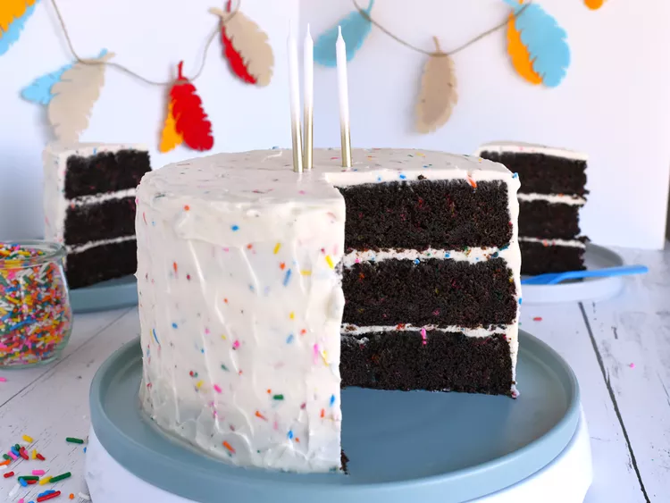

Chocolate Funfetti Cake

Discription
Sprinkles make everything more fun—and this chocolate funfetti cake proves
it! To make the cake layers easier to frost, I recommend carefully
wrapping them in plastic wrap, then placing them either in the fridge or
freezer until chilled.
Ingredients
Cake
- 2 cups cake flour
- 1 cup unsweetened cocoa powder
- 1 tablespoon instant espresso powder (optional)
- 1 teaspoon baking soda
- 1 teaspoon baking powder
- 1 teaspoon salt
- 1 cup unsalted butter, softened
- 1/4 cup vegetable oil
- 2 cups firmly packed brown sugar
- 3 large eggs, at room temperature
- 1 tablespoon vanilla extract
- 1 cup sour cream, at room temperature
- 3/4 cup 2% milk, at room temperature
- 3/4 cup rainbow jimmie sprinkles
Frosting
- 1/2 cup unsalted butter, softened
- 12 ounces full fat cream cheese, at room temperature
- 4 1/2 cups confectioner's sugar
- 1 1/2 teaspoons vanilla extract
- 1/4 teaspoon salt
- 1/8 teaspoon almond extract
- 2 tablespoons heavy cream, chilled
- 1/3 cup rainbow jimmie sprinkles
Steps
-
Preheat the oven to 350 degrees F (175 degrees C). Spray 3 8-inch round
cake pans with a baking spray containing flour, and line the bottoms of
the pans with parchment paper.
-
For cake, sift together flour, cocoa powder, espresso powder, baking
soda, baking powder, and salt. Set aside.
-
In a large bowl, beat together butter, vegetable oil, and brown sugar on
medium-high speed until light and fluffy, 3 to 4 minutes. Add in eggs 1
at a time; beating well after each addition. Mix in vanilla. Add in half
of the dry ingredients and mix until just combined. Add in sour cream
and milk, and mix until just combined. Add in remaining dry ingredients
and mix until just combined. Fold in sprinkles.
-
Divide batter evenly between pans. Gently tap pans on the counter a few
times to remove larger air bubbles.
-
Bake in the preheated oven until tops of the cakes spring back lightly
when touched, 30 to 35 minutes. Err on the side of slightly underbaking
rather than overbaking. Allow cakes to cool in pans for 30 minutes
before removing to a wire rack to cool completely.
-
For frosting, beat butter in a large bowl until smooth. Add in cream
cheese and beat until smooth. Add in 1 cup of powdered sugar, 1 1/2
teaspoons vanilla, 1/4 teaspoon salt, and almond extract and mix until
smooth. Add in remaining powdered sugar 1 cup at a time, mixing well
after each addition. Add in chilled heavy cream and beat until frosting
is light and fluffy, about 3 minutes on medium-high speed. Fold in
sprinkles.
-
To assemble cake, place one cooled cake layer onto a serving platter.
Top with a thin layer of the frosting. Continue layering and frosting
remaining cake layers. Use remaining frosting to frost the top and
outside of cake. Place cake into the fridge to chill for 30 minutes
before serving.